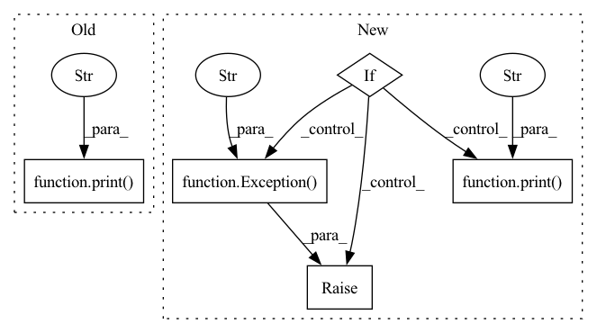

Pattern ID :7888

Before Change
self.device.get_devices()
self.name = self.device.get_device(capture)
if dcap is None:
print("Opening classic")
self.device.capture_device(capture, self.width, self.height, self.fps)
else:
if dcap < 0:
print("Opening default")
After Change
ret = self.device.capture_device_default(capture)
else:
ret = self.device.capture_device_by_dcap(capture, dcap, self.width, self.height, self.fps)
if not ret:
raise Exception("Failed to start capture.")
self.width = self.device.width
self.height = self.device.height
self.fps = self.device.fps
print(f"Camera: \"{self.name}\" Capability ID: {dcap} Resolution: {self.device.width}x{self.device.height} Frame rate: {self.device.fps} Colorspace: {self.device.colorspace} Internal: {self.device.colorspace_internal} Flipped: {self.device.flipped}")
self.timeout = 1000
def is_open(self):
return self.device.capturing()
def is_ready(self):
In pattern: SUPERPATTERN
Frequency: 3
Non-data size: 5
Instances
Fragment ID: 28088540
Project Name: emilianavt/openseeface
Commit Name: 3670d3f7931ac21cc7b87b3649d811cfcd14166d
Time: 2020-09-29
Author: 38952746+emilianavt@users.noreply.github.com
File Name: input_reader.py
M Class Name: DShowCaptureReader
N Class Name: DShowCaptureReader
M Method Name: __init__(7)
N Method Name: __init__(7)
M Parent Class: VideoReader
N Parent Class: VideoReader
M File Name: input_reader.py
N File Name: input_reader.py
M Start Line: 59
M End Line: 76
N Start Line: 59
N End Line: 84
'>
Before Change
print(e)
raise e
print("The pod is healthy")
if __name__ == "__main__":
After Change
is_ready = AsyncNewLoopRuntime.is_ready(addr)
if not is_ready:
raise Exception("Pod is unhealthy")
print("The Pod is healthy")
if __name__ == "__main__":
'>
Fragment ID: 28088541
Project Name: jina-ai/jina
Commit Name: ef662b529b2a2eecea7bb99759a9f7b9d86d3062
Time: 2022-06-08
Author: joan.martinez@jina.ai
File Name: jina/resources/health_check/pod.py
M Class Name: AnonimousClass
N Class Name: AnonimousClass
M Method Name: check_health_pod(1)
N Method Name: check_health_pod(1)
M Parent Class:
N Parent Class:
M File Name: jina/resources/health_check/pod.py
N File Name: jina/resources/health_check/pod.py
M Start Line: 11
M End Line: 21
N Start Line: 1
N End Line: 13
'>
Before Change
y = model(x)
x_hat = model.inverse(y)
loss = lf(x, x_hat)
print(f"loss={loss}")
return
print("\ntesting block (CPU) ...")
After Change
x_hat = model.inverse(y)
loss = lf(x, x_hat)
print(f"loss={loss}", end=", ")
if loss.item() < th:
print("pass")
else:
raise Exception(f"L1 loss of inverse is too high!")
return
def BasicTest(model, dim, requires_grad=False, batch_size=8):
'>
Fragment ID: 28088537
Project Name: elife-asu/innlab
Commit Name: eec8c147101aa5740042886d28396bdae6fb42ac
Time: 2021-04-27
Author: Zhang.Yanbo@asu.edu
File Name: tests/test_basic.py
M Class Name: AnonimousClass
N Class Name: AnonimousClass
M Method Name: _inverse_test(6)
N Method Name: _inverse_test(5)
M Parent Class:
N Parent Class:
M File Name: tests/test_basic.py
N File Name: tests/test_basic.py
M Start Line: 57
M End Line: 70
N Start Line: 54
N End Line: 73